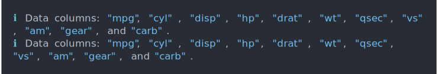

| cli_alert {cli} | R Documentation |
Alerts are typically short status messages.
cli_alert(text, id = NULL, class = NULL, wrap = FALSE, .envir = parent.frame()) cli_alert_success( text, id = NULL, class = NULL, wrap = FALSE, .envir = parent.frame() ) cli_alert_danger( text, id = NULL, class = NULL, wrap = FALSE, .envir = parent.frame() ) cli_alert_warning( text, id = NULL, class = NULL, wrap = FALSE, .envir = parent.frame() ) cli_alert_info( text, id = NULL, class = NULL, wrap = FALSE, .envir = parent.frame() )
text |
Text of the alert. |
id |
Id of the alert element. Can be used in themes. |
class |
Class of the alert element. Can be used in themes. |
wrap |
Whether to auto-wrap the text of the alert. |
.envir |
Environment to evaluate the glue expressions in. |
nbld <- 11
tbld <- prettyunits::pretty_sec(5.6)
cli_alert_success("Built {.emph {nbld}} status report{?s} in {tbld}.")
cfl <- "~/.cache/files/latest.cache"
cli_alert_info("Updating cache file {.path {cfl}}.")
cfl <- "~/.cache/files/latest.cache"
cli_alert_warning("Failed to update cache file {.path {cfl}}.")
cfl <- "~/.config/report.yaml"
cli_alert_danger("Cannot validate config file at {.path {cfl}}.")
Alerts are printed without wrapping, unless you set wrap = TRUE:
cli_alert_info("Data columns: {.val {names(mtcars)}}.")
cli_alert_info("Data columns: {.val {names(mtcars)}}.", wrap = TRUE)
